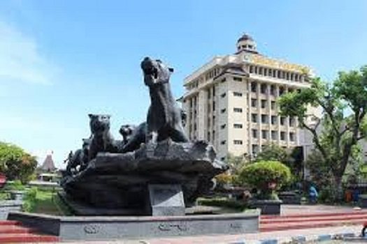

My Hometown
-
Ponorogo Regency is a regency in East Java, Indonesia. Ponorogo Regency lies between latitudes 7° 49’ - 8° 20’ S, and longitudes 111° 17’ - 111° 52’ E, between 92 and 2,563 meters above sea level and covers an area of about 1,371.78 km².
-
Ponorogo Regency is in the southwestern part of East Java and on the border with Central Java. It is bordered by Madiun Regency in the north, Trenggalek Regency in the east, Pacitan Regency and Trenggalek Regency in the south, and Pacitan Regency in the west.

-
Ponorogo derived from two words, namely "pramana" which means strength, the secret of life and "raga" which means body. It can be interpreted that in the human body there is a secret of life in the form of an established mental cultivation related to controlling anger characteristics.
-
From deliberations with Raden Bathara Katong, Kiai Mirah, Seloaji, and Jayadipa on Friday during a full moon, Ponorogo was originally named Pramana Raga which eventually changed to Panaraga (Ponorogo).
-
On August 11, the anniversary of the founding of the Ponorogo Regency is celebrated. Because on August 11, 1496, Bathara Katong, the first leader of Ponorogo, went from the Old Town to the Central City of Ponorogo and crowned himself the first Duke of Ponorogo.


-
Ponorogo Regency known as Kota Reog or Bumi Reog, it is considered the birthplace of Reog Ponorogo, a traditional Indonesian dance form. Every year in Suro (Islamic month of Muharram), Ponorogo holds a celebration known as Grebeg Suro, "the party of the people".
-
Grebeg Suro involves many traditional events such as the National Reog Festival, the Cross-History Parade and the Heritage Carnival, and the Larungan Proceedings of Prayer held at Lake Ngebel.